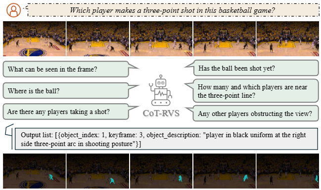
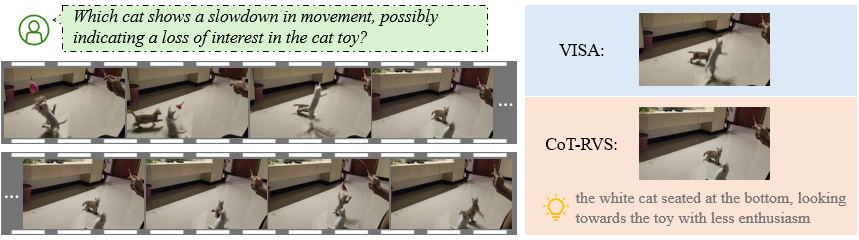
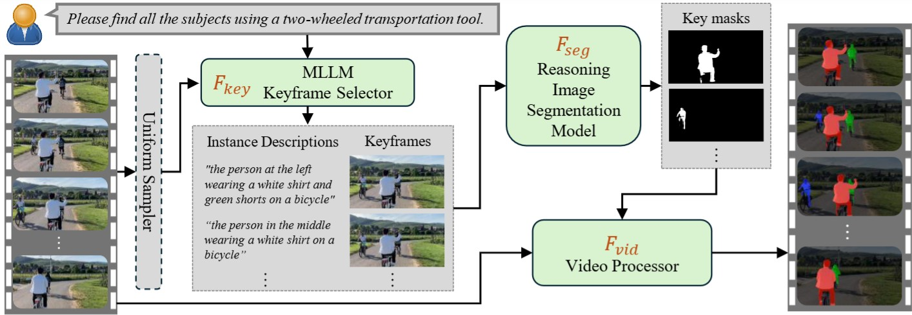
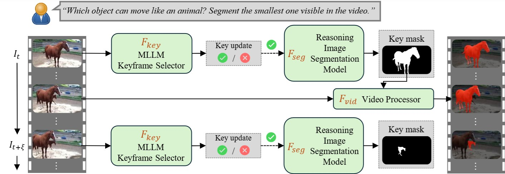

My friend and I each drove our cars to another city. He was driving a white car and leading the way in front of me, but he drove too fast and I lost him. He called me to say that he had just been waiting at a traffic light and then crossed an intersection. Which one is most likely to be my friend's car?
The mode of transportation capable of transporting the largest group of people.
The vehicle that overtakes from the left and heads in a different direction at the intersection.
American football players are fast, strong, and dexterous. Which player got his team on board with a brilliant play?
The automobile that merged into my lane abruptly and then left.
Basketball is a popular sport in the US. The team who successfully put the ball inside the basket will get two or three points, depending on the distance of the shot. Players shoot the ball behind the three-point line will get three points. Are there any players making a three-point attempt in this video? Please segment the one who successfully made the three-point shot.
If the animal were not on the right track, it would probably be intervened and corrected by human. Which one is on the wrong track?
* Temporally sensitive queries are highlighted in red.
Abstract

Reasoning Video Object Segmentation is a challenging task, aiming at generating a mask sequence from an input video given a complex and implicit text query.
While existing works finetune Multimodal Large Language Models (MLLM) for the task, they still fail in video inputs given complex temporally-sensitive queries,
indicating their lack of temporal and spatial integration in complex scenarios.
In this paper, we propose CoT-RVS, a novel framework employing the zero-shot Chain-of-Thought (CoT) capability of MLLM to address these complex challenges by temporal-semantic reasoning:
CoT-RVS analyzes the visible objects within a given frame that possibly matches the language query (semantic),
and chooses a corresponding keyframe for each object that can be observed effortlessly among all frames (temporal).
Notably, the CoT-RVS framework is training-free and compatible with closed-source MLLMs, which can be applied to Reasoning Video Instance Segmentation.
Our framework's training-free feature further allows its extension to process online video streams, where the CoT is used at test time to update the object of interest when a better target starts to emerge and becomes visible.
We conduct extensive experiments on video object segmentation with explicit and implicit queries. The results show that CoT-RVS significantly outperforms previous works in both cases, qualitatively and quantitatively.
CoT-RVS (Original): Reasoning Video Instance Segmentation
The CoT is applied to the entire video to extract temporal-semantic correlation, and evantually generate an instance list with respect to selected keyframes and synthetic instance description.
As shown below, our method samples more reasonable keyframe than prior work VISA. In addition, our synthetic instance description is more informative for segmentation module to recognize the object of interest within the selected keyframe.

After the temporal-semantic reasoning, the selected keyframes and respective instance descriptions will be sent to the segmentation module and video processor for succesive VOS task, following this pipeline:

Reasoning VIS Results
My friends and I want to buy a car because we always travel by public transportation, which is inconvenient sometimes. What object(s) may be used in our previous trips? Please find all visible in the video.
Are there any subjects that overtake from my right side and stop in front of me, while I was waiting the traffic light? Please segment them.
Please segment all the visible subjects that are using some kind of transportation tool.
Last year, my roommates and I decided to have some pets together. What is/are the pets in the video?
CoT-RVS (Online): Online Reasoning Video Object Segmentation
Our approach can also handle online video streams where future frames have yet to be observed. This is useful when the user would like to update the object of interest, if an object that better aligns with the query appears. This framework adopts a greedy strategy to periodically update the selected keyframe when an incoming frame satisfies the query requirement, then using the keyframe to track in the following frames. When none of the previous frames is selected as a keyframe, the model outputs nothing.

Online Reasoning VOS Results
Which subject is trying to climb using the pole on the right side?
My friends and I are interested in horse racing, so we raise some horses together. Mine is a small, brown, and energetic horse. Which one is most likely to be mine?
Monkeys are social animals. The elder individual need to take care of the younger ones. Please segment the one that is currently taking care of others.